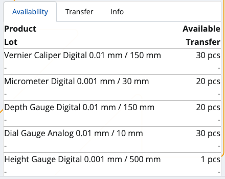
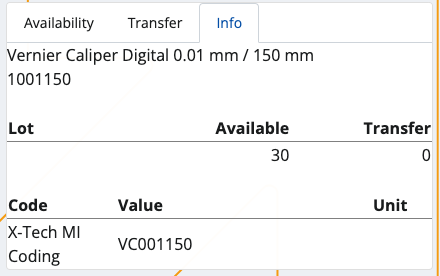
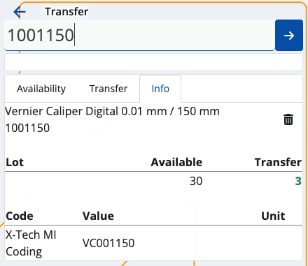
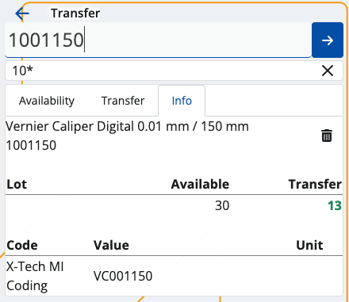
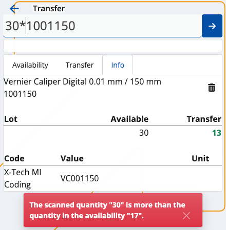
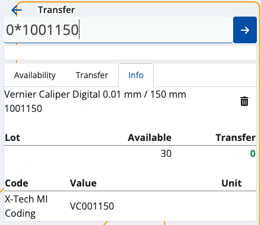

Transfer
This section allows you to transfer available product quantities from one of your stores to another, and generate transfer orders.
Transfering is useful when a particular store no longer needs certain quantities and has requested to move them to a different one.
Upon every transfer, the sending store must generate a separate issue store transaction to reflect the transferred quantities, while the recipient store must generate a receipt store transaction. Both documents can be generated through Inventory Control or similar modules.
Prerequisites
Make sure you've set the correct document type for this operation within the Settings.
You'll then be prompted to select the correct store from which you want to transfer, and the store to which you want to transfer.

When done, tap Ok. You'll be taken to the Transfer module.

Overview
Transfer is composed of three tabs:
- Availability
- Transfer
- Info
Availability
This is where all of your store products are listed, together with their current quantities and lots, if present.

Transfer
Here, you can find how many quantities of the products are selected for transfer as opposed to being available in total.
For example, out of 20pcs, only 10 may need to be transferred. This will be reflected in the transfer order.

Info
If you tap on a product from the Availability tab, you'll be shown further information about it here.
This includes revealing its unique code, barcode and GTIN, if present, as well as how many instances of it will be transferred.
If more lots are present, the available-transfer ratio will be distributed based on the FEFO principle.

Scanning
In order to transfer currently available quantities of your products, you need to use the Scan field.
It lets you quickly insert the instances of a product you want to transfer either manually or through barcode commands.
For a list of available barcode templates, check out the Command list.
Individual transfer
Simply type in a product's code once (e.g. "0000001") in order to transfer only one pcs of it. Tap the blue arrow to confirm.

Every time you scan, you'll be taken to the Info tab for the respective product. Successfully transferred pcs are painted in green.
If more lots are present for a product, the FEFO principle determines which lot has pcs transferred first.
Incorrect product codes will generate an error.

Multiple transfers
To transfer more pcs or the exact number of pcs for a product, specify it first (e.g. "50"), add a "*", and then enter the product code.
This can be done on one line (e.g. 50*1001150), or on two separate lines for each input. Tap the blue arrow to confirm.

NOTE!
The trash bin button allows you to remove the latest transfer, which will restore the previous Transfer value.
Any one, two or three-number combination is automatically counted as a multiplier. You can insert it without adding "*" in the end.
You can remove inserted multipliers by tapping the Clear button (X).
The desired transferred pcs of a product cannot be more than what is set as available in the system.

Zero count
In case you've made a mistake and want to start the transfer process from scratch, type in "0*" followed by the affected product code.
If the Transfer bar is left with zero, this will be interpreted as the product having "0 pcs" for transfer in the final transfer order.

Generate a transfer order
Once you're done scanning the desired product quantities, you can go back to the Transfer tab to see if you've made any mistakes.
The Available value will be positioned above the Transfer one, making it easy to compare these values.

If all available product quantities are transferred, the Finish button will be painted in green.
Tap on it once to generate your transfer order.
This will take you to a separate space with direct access to the document type for this operation.

By tapping on it, you'll access the Inventory module from where you can release and complete the order.